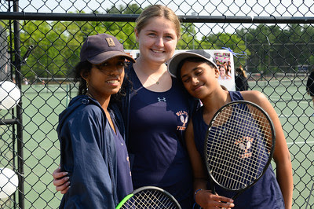
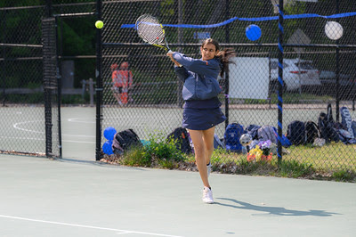
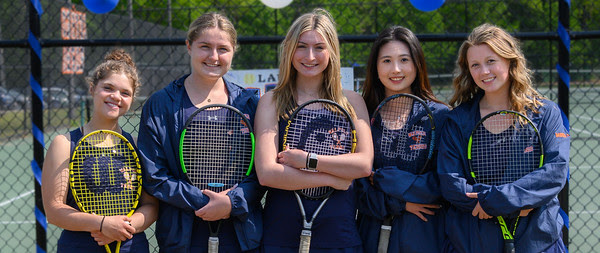

Walpole Public Schools
High School Girls Tennis Team

Our Coaches
Our 2023 Captains
Incoming Junior Captain Nirjara Akkole
About
The Walpole High School girls tennis team has been on the rise lately. With then help of coaches David Mordecai and Doug Lownstein, the 2023 team made it to the playoffs and got past the play-in tournoment. Also led by senior captain Caitlin Rocha and junior captains Ameya Gora and Saisha Singh the team ended with an overall record of twenty-one wins and ninten losses. Everyone who joined the team made a difference and created a very positive working envionment for all players and coaches.
Team Schedule
This year's schedule is not out yet because the season has not started. Will be ot soon!
Tryout dates
The team has a meeeting in the large confrenece room in the library at the walpole High School right after school before the season starts. Tryouts start on March 20th and run for three days.
Contact
If you want to sign up, please email this year's captains or the coaches.
Coach Dave: david@mordecai.ws
Coach Doug: dlowenstein@earthlink.net
